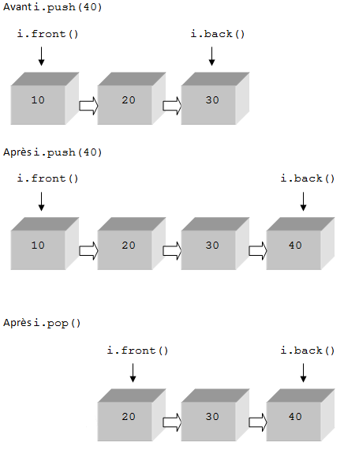

Dans ce tutoriel, vous allez apprendre à vous servir des piles ainsi que des files en C++.
Avant de vous lancer dans la lecture, vous pouvez lire le tutoriel d'Octal sur les piles et les files en C, pour voir le principe. L'avantage en C++, c'est que l'implémentation et l'utilisation ont été considérablement simplifiées ! :-°
Avant de commencer à coder, voyons le principe de ces structures de données.
Les piles
Tous les jours, on manipule des piles (et pas seulement dans la télécommande :D !). Prenons un exemple : une pile d'assiettes à laver. On les met les unes sur les autres et pour les laver, on prend celle du dessus. Un deuxième exemple : une pile de dossiers sur un bureau. On les met les uns au-dessus des autres et on retire le premier, donc le dernier arrivé. Les piles répondent à ce principe : dernier arrivé, premier servi, aussi connues sous le nom de LIFO pour LLast In, First Out.
Les files
Pour les files, c'est exactement le contraire ! Un exemple tout simple : une file d'attente. Le premier arrivé est le premier à sortir (à être servi), aussi connues sous le nom de FIFO pour FFirst In, First Out.
La STL
STL pour Standard Template Library. Les deux structures de données de ce tuto en font partie. Pour résumer, la STL est un ensemble de structures pouvant contenir n'importe quel type de données. Cela veut donc dire que, dans les piles et les files, on peut stocker tout type de données (entiers, réels, chaînes de caractères, ...) mais un seul type par structure : si je déclare une pile d'entiers, je ne pourrais pas empiler des chaînes de caractères !
Voici tout d'abord les opérations possibles sur les piles :
déterminer la taille de la pile ;
déterminer si la pile est vide ou non ;
ajouter une nouvelle donnée ;
consulter la dernière donnée empilée ;
supprimer la dernière donnée ajoutée.
Bien, ça, c'est la version en français, passons à la version C++ !
Pour pouvoir utiliser les piles, il faut inclure l'en-tête stack. Le début du code est donc :
#include <stack>
using namespace std;
Maintenant, pour pouvoir travailler avec une pile, il faut l'initialiser :
stack<int> i; //pile d'entiers
stack<string> s; //pile de chaînes de caractères
stack<T> p; //remplacer le T par le type voulu
Entre les chevrons (< >), il faut mettre le type de pile voulu. Si l'on désire une pile d'entiers, on met int ; pour une pile de chaînes, on met string, ... Voyons maintenant les différentes manipulations des piles.
La hauteur de la pile
Pour pouvoir boucler sur une pile, il faut connaître sa hauteur (ou sa taille). On utilise la fonction nomPile.size() qui renvoie le nombre d'éléments de la pile.
stack<int> i;
cout << "Le nombre d'éléments de la pile est : " << i.size() << endl;
Ce code affichera :
Le nombre d'éléments de la pile est : 0
La taille est zéro car lorsqu'une pile est initialisée, elle est initialisée en tant que pile vide, donc elle ne contient aucun élément.
L'état de la pile
Si on ne veut pas connaître le nombre d'éléments présents dans la pile, mais juste savoir si elle est vide ou non, on utilise la fonction nomPile.empty() qui renvoie un booléen qui vaut true si la pile est vide et false sinon.
Pour empiler un élément, on utilise la fonction nomPile.push(elt) qui prend en paramètre l'élément à empiler.
stack<int> i; //pile d'entiers
int elt = 12;
i.push(2); //je rajoute 2
i.push(elt); //je rajoute le contenu de la variable elt, soit 12
i.push("Chaîne"); //erreur à la compilation car i est une pile de type entier et non chaîne
Accéder au dernier élément de la pile
Maintenant, si on veut accéder aux éléments de la pile, il faut obligatoirement prendre le dernier empilé, donc celui qui se trouve au sommet. Pour récupérer cet élément, on utilise la fonction nomPile.top().
stack<int> i;
i.push(2);
i.push(12);
cout << "Le premier élément est : " << i.top();
Supprimer (dépiler) le dernier élément de la pile
Pour le supprimer, on utilise la fonction nomPile.pop().
stack<int> i;
i.push(2);
i.push(3);
cout << "Le premier élément est : " << i.top() << endl; // accès au dernier élément
i.pop(); // suppression du dernier élément
cout << "Le deuxième élément est : " << i.top() << endl; // accès au deuxième élément
i.pop(); // suppression du dernier élément ; maintenant la pile est vide !
cout << "Nombre d'éléments dans la pile : " << i.size() << endl;
Passage de paramètres
Implicitement, le passage de paramètres se fait par valeurs. Une pile passée en paramètre d'un sous-programme est donc recopiée. Pour des raisons de performances, une pile en entrée d'une procédure ou d'une fonction est passée par référence en ajoutant un "et commercial" (&) avant le nom du paramètre (exemple : stack<int>& p).
Maintenant, vous savez tout sur les piles :D !
Je vais maintenant vous donner deux exemples sur le fonctionnement de la pile en utilisant toutes les fonctions que l'on a vues. Le premier est une procédure de remplissage et d'affichage d'une pile.
#include <iostream>
#include <stack>
using namespace std;
/* Procédure qui remplit la pile passée en paramètre. La pile est passée par référence, ce qui veut dire que quand on ajoute un élément, on agit directement sur la "vraie" pile déclarée dans le main */
void remplir(stack<int>& p)
{
int n;
cout << "Entrez le nombre d'éléments de la pile : ";
cin >> n;
int elt;
for(int i = 0; i < n; i++)
{
cout << "Entrez un élément : ";
cin >> elt;
p.push(elt);
}
}
/* Procédure qui affiche la pile donnée en paramètre. La pile est passée par référence et déclarée const pour être sûr de ne pas la modifier, car on travaille sur la "vraie" pile (elle n'est pas recopiée en mémoire) */
void afficher(const stack<int>& p)
{
stack<int> t = p;
while(!t.empty())
{
cout << t.top();
t.pop();
if(!t.empty())
cout << " , ";
}
}
int main()
{
stack<int> p;
remplir(p);
cout << "Votre pile est : ";
afficher(p);
return 0;
}
Le deuxième exemple est un programme qui montre l'évolution de la pile.
Pour pouvoir utiliser les files, il faut inclure l'en-tête queue. Le début du code est donc :
#include <queue>
using namespace std;
Pour initialiser une file, il faut la déclarer comme ceci :
queue<int> f; // file d'entiers
queue<T> g; //remplacer T par le type voulu
Voyons maintenant les différentes fonctions.
La taille de la file
On utilise la fonction nomFile.size().
L'état de la file
On utilise la fonction nomFile.empty(). Rappel : cette fonction renvoie un booléen.
Ajouter un nouvel élément
On utilise la fonction nomFile.push(elt).
Supprimer la première donnée
On utilise la fonction nomFile.pop().
Accéder au premier et au dernier élément
Pour accéder au premier élément ajouté dans la pile (donc le premier à sortir), on utilise la fonction nomFile.front(). Pour accéder au dernier élément ajouté dans la liste, on utilise la fonction nomFile.back().
Voici un exemple d'utilisation :
queue<int> i;
i.push(10);
i.push(20);
i.push(30);
i.push(40);
cout << "Le premier élément est : " << i.front() << endl;
cout << "Le dernier élément est : " << i.back() << endl;
i.pop();
cout << "Le premier élément est : " << i.front() << endl;
cout << "Le dernier élément est : " << i.back() << endl;
Le résultat est :
Le premier élément est : 10
Le dernier élément est : 40
Le premier élément est : 20
Le dernier élément est : 40
Pour mieux comprendre, on peut dessiner la file :

Je termine cette partie sur les files avec deux exemples.
Le premier est une procédure d'affichage d'une file.
/* Procédure qui affiche la file donnée en paramètre. La file est passée par référence et déclarée const pour être sûr de ne pas la modifier, car on travaille sur la "vraie" file (elle n'est pas recopiée en mémoire) */
#include <iostream>
#include <queue>
using namespace std;
void afficher(const queue<int>& f)
{
queue<int> q = f;
while(!q.empty())
{
cout << q.front();
q.pop();
if(!q.empty())
cout << " , ";
}
}
Le deuxième exemple utilise toutes les fonctions sur les files.
Bien, nous allons maintenant voir un exemple concret avec les piles (un exemple avec les files suivra dès que je l'aurai trouvé ! :D ).
Les EPF (Expressions Post-Fixées)
Une expression est dite post-fixée ou écrite en notation polonaise inversée lorsque chaque opérateur est immédiatement précédé de ses deux opérandes. Les expressions suivantes en sont des exemples :
1. 42+
2. 32*54*+
3. 1253+*+7-
Commençons par évaluer manuellement ces 3 expressions.
Pour les évaluer, on applique la définition : chaque opérateur est précédé immédiatement de ses deux opérandes.
Exemple 1 : 42+
On parcours l'epf jusqu'au premier opérateur qui est + et on l'applique aux deux opérandes qui le précèdent, 4 et 2, ce qui donne au final 4+2=6. Bon, c'était le plus simple !
Exemple 2 : 32*54*+
Lorsque l'expression devient plus compliquée, il est plus simple de faire un petit schéma pour comprendre. Pour faire ce schéma, on écrit tous les chiffres sur la même ligne. Ensuite, on parcourt à nouveau l'epf jusqu'au premier opérateur et on l'applique aux deux opérandes juste avant. Et on continue jusqu'à ce que tous les opérateurs aient été traités. On peut les relier avec des flèches. Pour cet exemple, on obtient ceci :
Cela se traduit : (3*2)+(5*4) = 26.
Exemple 3 : 1253+*+7-
Celui-ci est un peu plus complexe, mais en appliquant la méthode, on parvient au but très facilement. Pour cet exemple, le schéma est :
Cela se traduit par : (((5+3)*2)+1)-7 = 10.
Comme vous pouvez le constater, si les epf deviennent très longues, c'est aussi très long à calculer. Nous allons donc faire le programme qui les résout en nous aidant des piles.
Principe
L'expression est lue de gauche à droite,
1. lorsqu'une valeur (opérande) est rencontrée, elle est empilée ; 2. lorsqu'un opérateur est rencontré :
a) une première valeur est dépilée. b) une deuxième valeur est dépilée. c) on effectue l'opération correspondant à l'opérateur rencontré. d) on empile le résultat.
À la fin, il ne reste plus qu'une seule valeur dans la pile, il s'agit du résultat de l'évaluation de l'epf.
Pour faire ce programme, nous prendrons pour hypothèses :
l'expression est considérée comme étant syntaxiquement correcte ;
les opérandes sont comprises entre 0 et 9 et ne sont donc représentées que par un seul caractère ;
seuls les opérateurs suivants sont considérés : + - * / ;
aucun caractère d'espacement n'est introduit dans la chaîne.
Avec ces conditions, ce n'est pas trop dur d'écrire le programme. La seule difficulté qu'il peut y avoir est de faire la différence entre un opérateur et une opérande. En effet, l'epf est donnée par l'utilisateur sous forme de string. Nous allons donc d'abord coder deux fonctions : une pour chercher les opérateurs et l'autre pour chercher les opérandes. Si vous avez regardé le tutoriel de M@teo21, vous avez sûrement pensé à la méthode itérative, c'est-à-dire avec une boucle. Je vais vous montrer une autre méthode.
Voici la nouvelle méthode : dans la fonction, on déclare une chaîne contenant les opérateurs. Nous appliquerons la méthode chaîne.find(char) sur cette chaîne. find prend un caractère en paramètre, et c'est elle qui va parcourir toute seule la chaîne pour chercher le caractère passé en paramètre. Si le caractère est présent, elle renvoie la première position de celui-ci, sinon, elle renvoie string::npos. Nous, nous allons utiliser le string::npos.
Voici le code de la fonction booléenne opérateur(const char c) qui renvoie vrai si le caractère c est un opérateur :
bool operateur(const char c)
{
string op = "+*-/";
bool res = false;
if(op.find(c) != string::npos) //si on trouve le caractère c dans op
res = true;
return res;
}
C'est quoi le caractère passé en paramètre ?
Ce caractère est celui lu dans l'epf. On lit les caractères de l'epf l'un après l'autre dans une procédure qui résout l'epf.
Passons maintenant à cette procédure. Elle est assez simple à écrire ; en effet, j'ai déjà donné la méthode plus haut ; il suffit de l'appliquer bêtement !
Pour commencer, cette procédure prend une chaîne de caractères en paramètre. C'est aussi dans cette procédure que l'on va initialiser la pile des opérandes et des différents résultats. Il nous faut également trois variables locales pour stocker la première et la deuxième valeur de la pile et le résultat du calcul de ces deux valeurs.
Voici le code de la procédure :
void eval(string epf)
{
stack<int> p;
int val1, val2, res;
for(unsigned int i = 0; i < epf.length(); i++)
{
if(!operateur(epf.at(i)))
p.push(epf.at(i)-'0');
else
{
val1 = p.top();
p.pop();
val2 = p.top();
p.pop();
if(epf.at(i) == '+')
res = val2 + val1;
else if (epf.at(i) == '-')
res = val2 - val1;
else if(epf.at(i) == '*')
res = val2 * val1;
else
res = val2 / val1;
p.push(res);
}
}
cout << "Resultat : " << p.top() << endl;
}
Normalement, il doit y avoir quelque chose qui vous choque dans ce code. J'ai mis :
p.push(epf.at(i)-'0');
C'est surtout le " -'0' " qui doit vous choquer. Je fais ça parce que epf.at(i) est un caractère et on ne peut pas utiliser le caractère comme un chiffre, même si le caractère en question représente un chiffre. Si on fait des calculs sur ce caractère, on fera les calculs avec les codes ASCII décimaux correspondants. Si on regarde une table ASCII, ici par exemple, on voit que les codes ASCII décimaux des chiffres de 0 à 9 ont pour codes 48 pour 0... jusqu'à 57 pour 9. On remarque alors qu'il suffit de retirer 48 à ce code pour avoir un code correspondant au chiffre. Pour retirer 48 au code ASCII, il suffit de retirer le caractère 0, ce qui va retirer 48 au code ASCII du caractère auquel on applique cette soustraction.
Bien, comme je pense que vous avez bien souffert si vous lisez ceci, je vais vous donner le code complet du programme :
#include <iostream>
#include <stack>
#include <string>
using namespace std;
bool operateur(const char c)
{
string op = "*/-+";
bool res = false;
if(op.find(c) != string::npos)
res = true;
return res;
}
void eval(string epf)
{
stack<int> p;
int val1, val2, res;
for(unsigned int i = 0; i < epf.length(); i++)
{
if(!operateur(epf.at(i)))
p.push(epf.at(i)-'0');
else
{
val1 = p.top();
p.pop();
val2 = p.top();
p.pop();
if(epf.at(i) == '+')
res = val2 + val1;
else if (epf.at(i) == '-')
res = val2 - val1;
else if(epf.at(i) == '*')
res = val2 * val1;
else
res = val2 / val1;
p.push(res);
}
}
cout << "Resultat : " << p.top() << endl;
}
int main()
{
string epf;
cout << "Entrez votre EPF : ";
cin >> epf;
eval(epf);
return 0;
}
Voilà, on arrive au terme de cet exemple concret.
Vous êtes arrivés au terme de ce tutoriel. En espérant que vous ayez tout compris, je vous dis :